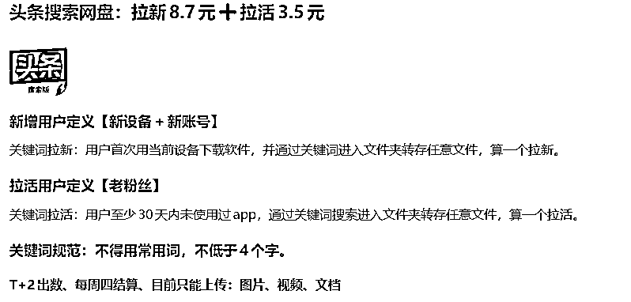
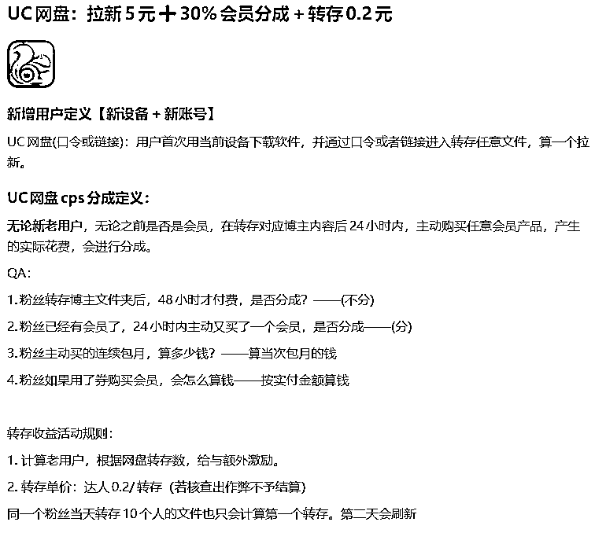
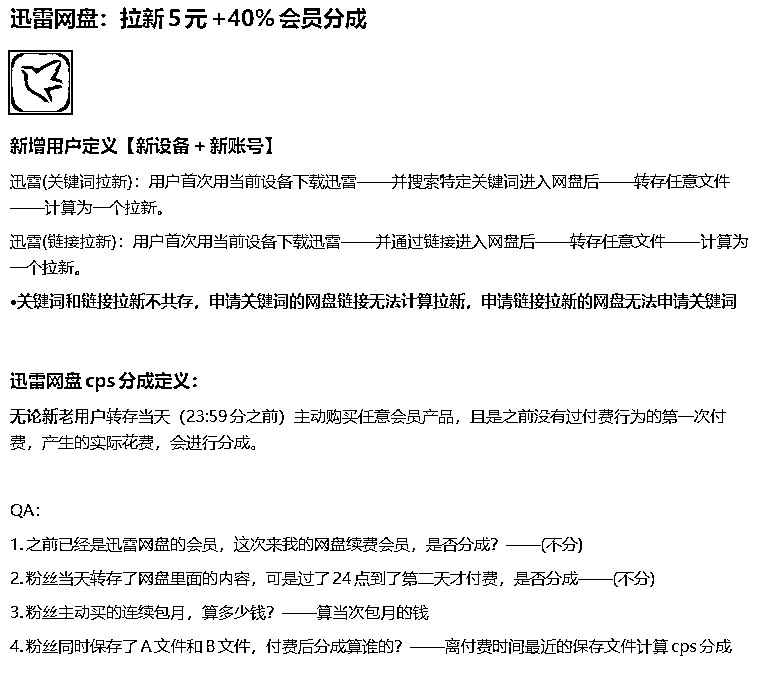
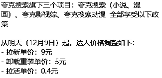

来源：https://lx3gy9plhrh.feishu.cn/docx/OyiJdz6HOofKJSxagi7cFF1pngg
生财圈友大家好，我是闰土，上次分享网盘拉新是五月六号，从我22年11月5日做网盘拉新开始，到现在已经一年多了。
好多生财的朋友们加我想开后台或者做分销，这次就把网盘拉新如何赚钱，如何分销代理，真实价格讲明白。
最近哈尔滨非常火，作为一个地地道道的东北哈尔滨人，绝对实实在在的把干货分享给大家。但文笔不好，学历不高，咱就大白话讲明白。不满意您评论区指出。
这篇文章分享的同时也想找到一些志同道合对网盘拉新感兴趣的朋友，看看能否有合作的方向。
我现在做的有迅雷网盘、夸克网盘、UC网盘、今日头条网盘（就是市面看到的悟空网盘闪电网盘）。
这当中迅雷网盘分迅雷网盘拉新和迅雷网盘链接拉新。
夸克分夸克网盘拉新、夸克动漫搜索、夸克影视综搜索等（夸克我们这做的是网盘跟影视综）
UC也分好多种但是主做UC网盘。头条有网盘和悟空浏览器（悟空浏览器是今天新产品暂不介绍）。
【地推的量、外面任务墙的量、刷单的都会被防作弊系统筛掉 因为没有行为动向和留存】
【真正被内容吸引的粉丝官方会正常出数据】
下面是各大网盘产品的计算拉新方式：




这些是各大网盘的政策价格与计算方式，给的最多的是夸克搜索与今日头条。
1、迅雷网盘，网盘中的佼佼者，去年换完领导之后政策上调，不算拉新，仅CPS一项做的好的月收入都五位数，可以自己设置关键词 ，链路简单。打款不墨迹，但是价格还未继续上调，竞争不过头条网盘，上线时间长，老客户比例增加，但是还是能玩。
2、夸克UC网盘，这俩都是阿里旗下，一个部门运营，夸克政策永远比UC好一点，没有头条的时候他是老大，但是缺点很多，不能自己设置关键词（因为阿里法务怕担责），只能乱码复制，转化链路多，转化也没有迅雷好 ，但是夸克搜索价格高可以设置关键词，也不用网盘里放东西，只要干预个网站就行。夸克23年被央视点名，虽然现在风波过了，但是现在三大网盘他在我心目中排第三。能做的还是夸克搜索。
3、今日头条（最开始叫悟空网盘然后停了又弄个闪电网盘整了没几天又叫回悟空网盘了）
优点：钱给的多，不考虑充值，只看留存，新网盘转化好，元旦前后刚出跟捡钱一样。
缺点：审核严格，需要先放一些无关紧要的内容先过审关键词，再偷梁换柱换网盘内容来保证留存。
网盘只能存放文档视频图片，想放安装包得先改文件后缀，存放之后再改回来去过机审。
IOS端刚上线，之前一直只有安卓版本，拉新要下载头条搜索极速版，而不是今日头条。
刚出的时候归因不严，只要有搜索就给钱，现在从新改变归因逻辑，没有以前转化高。但是还是很好做。
还有一点就是留存一段时间不达标会停关键词并劝退，哈哈。
刚出的时候因为是抖音亲儿子，引流能睁一只眼闭一只眼，但是跟内部对接的时候说抖音权重最高，当产品不完善时不会让随便引流，之前还说能加白名单，但是群众里面有坏人，搞颜色，暂时搁置了。
1、自己发作品拉新
我们现在是两种玩法，一种是在快手拉新，一种是在抖音拉新。反正两个都是发视频，引流对你内容感兴趣的粉丝去你的网盘转存你的网盘内容。
快手号便宜就是暴力引流，直接硬广发作品，优点傻瓜无脑，我自己找人写的软件，能全自动排版发作品，以数量博质量，广撒网，爆一个就起飞，封一个就骂快手。
缺点就是跳激活，封号，需要买号，自己注册号，手机最少得五台起。
然后收入，一个人做的好的就是一周过万，一个月五六万这样，二三十台手机。（我说的是做的好的，自己不懒还愿意研究的）
具体玩法没怎么变就是快手图文，详情参考我五月份的分享
https://articles.zsxq.com/id_cxj3dpfmw0ze.html
（心态不好不能坚持，想一夜暴富，啥都图省事来，不专研，不琢磨的，就别碰了）
抖音玩法是我在生财五月份分享认识的圈友，在我这开的后台，合作至今，现在是我社群抖音玩法的教练，主打精细化，不死号。用他的话讲，要做对用户有用的事（具体怎么说的我忘了，大概这个意思）格局拉满，因为玩法是人家自己一点一点研究的，我就不透漏了。
大家有现在正在做网盘拉新的，感觉你那数据有问题的，可以来我这试试，是骡子是马一溜便知。
2、让别人给你赚钱，赚管道收益
就是去弄个商务推广，然后联系动漫，影视，短剧等这些博主，去跟他们合作，你给他们开后台，他每拉新一个你都有管道收益。就跟我现在做的一样，不过我不是去联系博主，我是自己培养博主。
赛道也不仅仅是我说的这几个赛道，我最近也发现了几个其他赛道，前段时间家里有事还没去开发他们，是我下一步打算。当然了这个价格肯定不是第二大点讲的价格，那是给博主的，你做的是商务代理，价格会比博主单价多五毛，那五毛就是你的佣金。（除了今日头条拉活拉新各五毛，其余产品拉活和CPS都跟你没有关系，就是一个拉新赚五毛），不过这是我这里政策，别人那里啥样都有，赚钱路子也多，价格扣点，量上扣点，大家如果拿下面人当韭菜的可以多去打听打听别人家政策方面是否能活动活动。我这里不行，我拿下面人当家人，不能扣量，都是统一后台。相反，你给价格低，扣量，长久以往下面博主留不住。
第二大点讲了各大网盘的价格，尤其是迅雷和头条我这都是独家政策，外面不可能有比我高的（当然有给你价格更高的，然后你拉新一百个给你扣一半量，然后多给你一块钱单价，外面好多都这么干的，比如某某帮APP）。
我这有新产品都会提前参与测试，当年UC网盘还有头条网盘内部测试都爽死。
做商务代理是需要有考核任务的，以周为单位，日均拉新多少，下面有多少个有效账户为考核标准，不是想做就能做商务的。
总结：网盘拉新对于我现在来说还是新项目，做项目交付或者做市场都是可以的，迅雷，阿里，字节全上场了，还有俩互联网巨头还没入场，腾讯计划今年推出自己的网盘，到时候我也会第一时间对接。
分享这篇网盘拉新
1是五月份发的文章现在还有圈友加我问我，统一做个回答，然后各位都明白咋回事，能合作咱就合作，不能合作也知道其中咋回事让大家少走弯路。
2我现在其中一个教练是在生财认识的，还有好多学员有的是通过生财认识的，有的是在生财看到我文章又刷到我视频或者直播认识的，反正生财给我创造高于门票N倍的价值，咱也得吃水不忘挖井人，给生财创造点价值。
3我写这个分享和合作各占一半，有一颗奉献的心也有利益的私心，我现在需要冲量，也幻想着一篇文章认识个大佬，直接帮我把量冲起来。
4今年我要猛猛做网盘，如果大家有好的玩法或者想法，欢迎来交流，我懂事，执行力强，不讲价，聪明学的快，打钱不墨迹，问问题挑重点，赚钱出结果第一时间给老师反馈，我跟您学习不是想赚钱，只是觉得老师是个英雄，是神，我想此生跟老师一起做些有意义的事情。
5、感谢生财，祝圈友们新的一年越来越好，事事顺心，项目把成，哐哐赚钱。